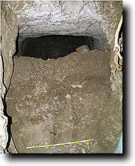
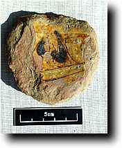
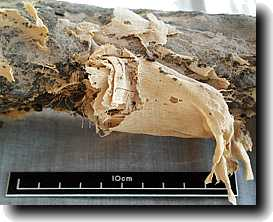
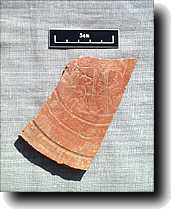
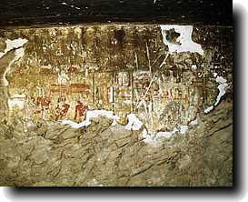
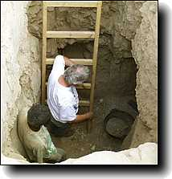

Thursday 10 December

|
We started today to move into the digging of the underground chambers of shaft I. Before this, we had to take the electricity supply into the chamber. The photo at left shows the doorway before we began to remove the debris in layers.
Work in the other shaft has now gone down to about 3 m. Pottery sampling having finished, work on the ceramics has moved to the drawing stage. The last lot of bones has been brought up from underground for study, and conservation work continues.
|
Wednesday 9 December
Digging was slow again today--is it the heat, since it is presently unseasonably hot at about 30-35°C? Progress down shaft H has gone down to about 2 m, while at the bottom of Shaft I the doorway has now been completely cleared, and we are now able to move into clearing the corridor beyond. Rebecca Hardy has now got the sorting of finds under control and we are able to start on writing up the finds worthy of recording.
Conservation and human remains work converged nicely today on the mummy we believe to be that of Wedjahor. The previous link tells you about the dating of the mummy; the key link is between some linen on the body and that found bearing the names of Shabaka and Wedjahor. Today, Tony Waldron confirmed that the remains did indeed belong to the same individual, and a small fragment of linen shown here was carefully removed from the body by Julie Dawson, and was confirmed bear the titulary of Shabaka .
|

Here are a couple of interesting sherds photographed today. One is a late Roman one incised with a lion or dog, while the other is from a glazed Mameluke vessel of the 14th or 15th century.
|
Tuesday 8 December

|
This morning our conservator, Julie Dawson, and site supervisor Rebecca Hardy joined the team. Julie began by checking the condition of the conservation work undertaken the previous year--such an example is in the adjacent photo, which shows the while areas of gypsum plaster added to support the edges of the painting on wall 6 of the front room. They appear to be OK.
For Rebecca, out on the dig there was a lot to do. A backlog of material to be sorted and arranged has built up in the activity of the last few days. For some reason, the digging today did not seem to go as well as other days. Shaft G was completed, and about 90 cm of progress was made down shaft H. Most of the debris is now off the floor of Shaft I, which measures in at 13.9 m deep!
|
Monday 7 December
Great progress seems to have been made on all fronts, whether bones, pots or the digging. The film crew were also with us today.
It looks very much whether the smaller shaft in the courtyard (G), is not going anywhere. Both 'doorways' to the north and east go nowhere, and thus it looks like tomorrow we will be able to go into the final shaft in the courtyard. This will help a great deal with time, as it will allow more opportunity to get into the chambers of the large shaft.
|
 |
|

 The Dig Diary 1998--Part 3
The Dig Diary 1998--Part 3